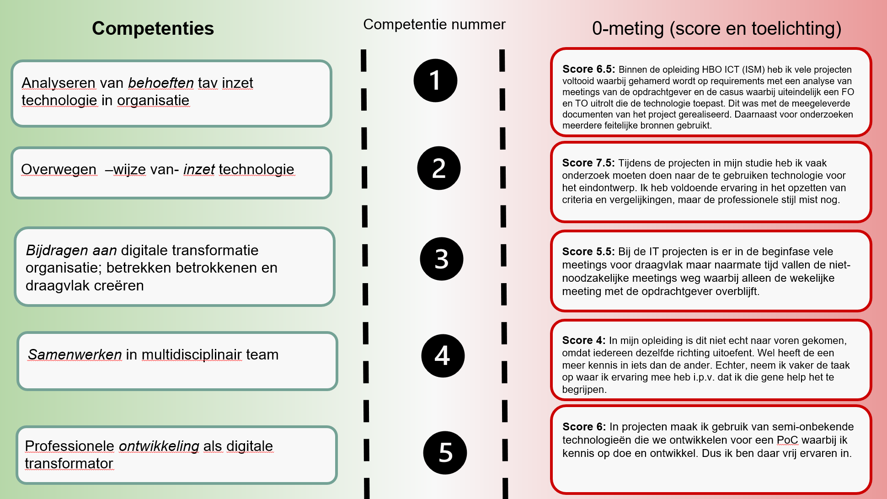

Meer de leiding nemen tijdens gesprekken, meetings, presentaties en workshops
Leerdoel: Verbeteren van mijn leiderschapsvaardigheden door meer de leiding te nemen in gesprekken, vergaderingen, presentaties en workshops. Dit omvat het actief stellen van vragen, het aansteken van discussies, en het aansteken van interactie met het team of publiek. Het doel is om mezelf meer zichtbaar en gehoord te maken, zodat ik effectiever kan bijdragen aan groepsgesprekken en mijn invloed kan vergroten.
Status: Leerdoel succesvol behaald
Waarom dit leerdoel belangrijk is: Leiderschap en communicatie zijn essentieel in de werkomgeving, vooral bij het samenwerken in teams, het geven van presentaties of het leiden van workshops. Het ontwikkelen van deze vaardigheden zorgt ervoor dat je beter in staat bent om richting te geven, initiatieven te nemen, en de discussies te sturen. Dit kan ook je zelfvertrouwen vergroten in professionele omgevingen. Door actief vragen te stellen, toon je interesse in wat anderen te zeggen hebben en stimuleer je de groep om verder te denken. Dit maakt je een effectievere teamspeler en kan bijdragen aan je persoonlijke en professionele groei.
Explanation: Ik ben van mening dat ik dit leerdoel heb gehaald, omdat ik actief heb gewerkt aan het verbeteren van mijn communicatievaardigheden. Gedurende de afgelopen weken heb ik mezelf meer gepositioneerd in gesprekken en vergaderingen door vaker het initiatief te nemen en actief vragen te stellen die de discussie bevorderden. In presentaties en workshops heb ik geprobeerd vaker het woord te nemen door vragen te stellen of actief deel te nemen wanneer vragen werden gesteld.
Door deze aanpak voel ik me zelfverzekerder in het nemen van de leiding en merk ik dat mijn bijdragen steeds meer gewaardeerd worden door zowel mijn medestudenten als docenten. Tijdens de feedbacksessie van de minor werd gevraagd naar 'tips en tops', en ik bracht een belangrijke tip naar voren, die ik vervolgens aan de klas heb uitgelegd. Deze tip werd door veel studenten verder besproken, wat de interactie en diepgang in de sessie bevorderde.
Ik besef dat het stellen van de juiste vragen niet alleen mijn eigen begrip vergroot, maar ook anderen stimuleert om dieper na te denken over bepaalde onderwerpen. Bovendien helpt het me om belangrijke punten te verduidelijken, waardoor ik mijn ideeën op een effectievere manier kan overbrengen.
Ook tijdens mijn werk bij mPrise Agriware merkte ik dat ik in de eerste meetings weinig van mezelf liet horen, omdat ik moeite had om snel met relevante punten te komen of vragen te stellen. Om dit te verbeteren, ben ik beginnen voor te bereiden op de vergaderingen door me in de onderwerpen in te lezen en me van tevoren in te informeren. Deze aanpak heeft mij geholpen om met voorkennis de gesprekken in te gaan, waardoor ik gerichte en waardevolle vragen kon stellen.
Daarnaast heb ik mijn presentatievaardigheden verder ontwikkeld door visuele hulpmiddelen effectiever in te zetten, wat de betrokkenheid van het publiek vergrootte. Hierdoor kon ik makkelijker praten en mijn informatie duidelijker delen. Gedurende de minor heb ik veel presentaties gegeven, en ik kan met vertrouwen zeggen dat deze ervaring heeft bijgedragen aan het behalen van mijn leerdoel. Het herhaaldelijk oefenen en presenteren heeft mijn vaardigheden aanzienlijk versterkt.
Hoewel er nog ruimte is voor verbetering, bijvoorbeeld in het opbouwen van mijn presentaties om nog meer impact te maken, ben ik ervan overtuigd dat ik aanzienlijke vooruitgang heb geboekt in het verkrijgen van meer zichtbaarheid en invloed binnen groepsgesprekken.
Vergroten van technische kennis op het gebied van coderen en programmeren
Leerdoel: Het uitbreiden van mijn technische kennis in coderen en programmeren door actief te werken met verschillende technologieën, waaronder Arduino, webontwikkeling met HTML en CSS en dergelijke. Dit leerdoel richt zich op het verbeteren van mijn programmeervaardigheden, het vergroten van mijn praktische ervaring met hardware en software integratie, en het leren van nieuwe tools zoals Visual Studio Code voor het ontwikkelen van zowel embedded systemen als webapplicaties.
Status: Leerdoel succesvol behaald
Waarom dit leerdoel belangrijk is: Technische vaardigheden in programmeren zijn essentieel voor het werken in veel verschillende industrieën, vooral in de technologische en engineering sectoren. Het combineren van hardware (zoals Arduino en ESP32) met software (zoals webontwikkeling) helpt me een breder scala aan probleemoplossende vaardigheden te ontwikkelen, wat van grote waarde is in de wereld van embedded systemen en IoT. Het verbeteren van mijn HTML en CSS kennis vergroot mijn vaardigheden in webontwikkeling, wat essentieel is voor zowel persoonlijke projecten als voor het bouwen van professionele toepassingen.
Explanation: Ik denk dat ik dit leerdoel gehaald heb, omdat ik actief ben gaan werken met diverse technologieën en tools die mijn kennis op het gebied van programmeren aanzienlijk hebben vergroot. Gedurende de minor heb ik gewerkt met Arduino, ESP32 voor smart technology, waarbij ik zowel hardware als software moest integreren. Dit proces gaf me praktische ervaring in het schrijven van code, het werken met sensoren, en het debuggen er van, wat mijn technische vaardigheden aanzienlijk heeft versterkt.
Daarnaast heb ik veel tijd besteed aan het gebruik van Visual Studio Code. Door deze tool te gebruiken voor zowel Arduino-programmering als webontwikkeling, ben ik beter geworden in het werken met verschillende programmeertalen en het beheren van mijn projecten.
Het werken met het vak Smart Technology was een van de meest waardevolle onderdelen van dit leerdoel. Het ontwerpen van een eigen PCB om circuitcomponenten te verbinden, en het leren over de technische aspecten van elektronische ontwerpen, heeft mijn kennis van hardware aanzienlijk vergroot evenals het 3D printen en het integreren van een database met de code die aansluit op de fysieke hardware.
Wat betreft webontwikkeling, heb ik ervaring opgedaan met het schrijven van HTML en CSS voor het maken een website. Door mijn eigen portfolio website te bouwen, heb ik geleerd hoe ik elementen kan stylen, layouts kan ontwerpen en mijn kennis van front-end ontwikkeling verder kan uitbreiden.
Ik realiseer me dat deze vaardigheden niet alleen waardevol zijn in de context van de minor, maar ook voor mijn toekomstige carrière. Het integreren van hardware en software biedt een breed scala aan toepassingen, en door deze nieuwe kennis te combineren met webontwikkeling, kan ik innovatieve oplossingen ontwikkelen voor verschillende technische uitdagingen.
Wekelijkse updates - Smart Me
Wat ik wil leren:
Hoe zet je een BMC (Business Model Canvas) in?
Het nut van een BMC.
Hoe ga je om met irrationele werkgevers?
Wat is een business case en hoe maak je die?
Wat ik heb geleerd:
Ik weet nu wat een BMC is en hoe je de verschillende vakjes invult op basis van een casus.
Het nut van een BMC is dat het helpt om de impact van toekomstige aanpassingen op de bedrijfsvoering in kaart te brengen.
Het omgaan met irrationele situaties komt nog aan bod.
Een business case gaan we later nog verder uitdiepen, dus deze vraag kan ik later beantwoorden.
Daarnaast hadden we deze dag ook nog de les Smart Me, waarin we begonnen met het creëren van de 0-meting op de competenties.

Door het maken van dit schema kreeg ik inzicht in hoe ik mezelf op zowel persoonlijk als professioneel gebied nog verder kan ontwikkelen tijdens deze minor. Een goed voorbeeld hiervan is samenwerken in een multidisciplinair team. Dit heb ik nog nooit gedaan, omdat we tijdens mijn opleiding alleen projecten hadden binnen mijn eigen klas.
We kregen ook een les over de STARR-methode (Situatie, Taak, Actie, Resultaat en Reflectie). Hierbij is de actie heel belangrijk: wat heb je precies gedaan of gezegd? Als je hier goed op terugblikt, weet je precies wat je de volgende keer anders moet doen of juist moet herhalen.
Technology Les: PCB Designen
Tijdens de technology les moesten we een PCB (Printed Circuit Board) ontwerpen.
Dit gaf ons inzicht in de technische processen achter hardware-ontwikkeling en de basisprincipes van het ontwerpen van elektronische schakelingen.
Connection Les: AI en Semantische Vectorruimtes
De les van Smart Connection ging over AI en semantische vectorruimtes. Het idee hierbij is dat je ruimtes definieert waarin je data kunt ordenen en later ook weer kunt ophalen. Semantiek houdt in dat data logisch wordt geordend op basis van hoe vaak het wordt gebruikt, waardoor de data betekenis krijgt. Deze vectorruimtes worden gebruikt in deep learning, waarbij AI leert van geordende, grote hoeveelheden data.
In het begin vond ik deze onderwerpen lastig te begrijpen, zelfs met mijn technische achtergrond. Gelukkig werd alles op een heel toegankelijke manier uitgelegd door Raoul, in simpele bewoordingen en met veel voorbeelden. Hij legde uit dat dit onderwerp veel te maken heeft met wiskunde, wat me aanvankelijk afschrikte. Maar Raoul stelde ons gerust en beloofde dat hij wiskunde zou uitleggen zonder echt wiskundige formules te gebruiken. Dit is hem ook zeker gelukt door het gebruik van veel visuele voorbeelden, wat ik erg fijn vond.
Raoul gaf ook aan dat we niet getoetst zouden worden op deze onderwerpen. Het doel van de lessen is om de kennis later te gebruiken bij het maken van de juiste keuzes. Mijn leerdoel voor deze les was het begrijpen van een semantische vectorruimte, en ik denk dat ik dat nu redelijk duidelijk kan uitleggen, zoals ik hierboven heb gedaan.
Daarnaast leerde ik over ontologieën, wat in feite een logische database is waarin verbanden worden gelegd tussen verschillende gegevens. Het voordeel van een ontologie ten opzichte van een vectorruimte is dat een ontologie geen dingen kan "verzinnen". Het systeem weet alleen wat het weet, en als het iets niet weet, zal het dat simpelweg aangeven.